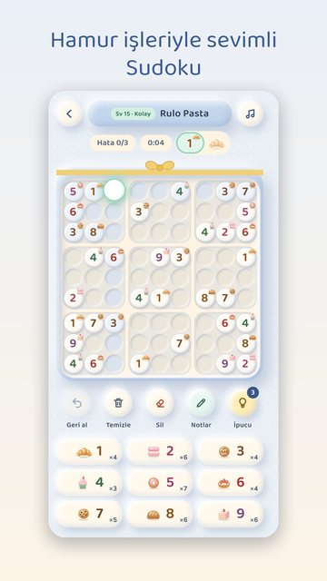
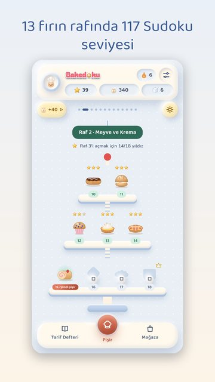
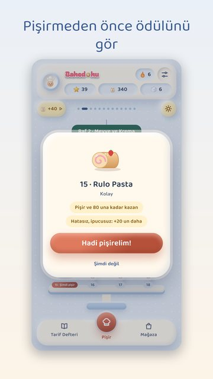
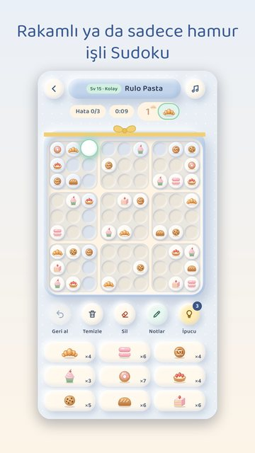
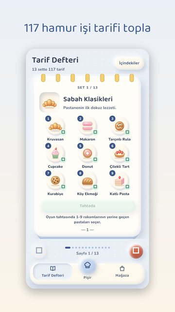
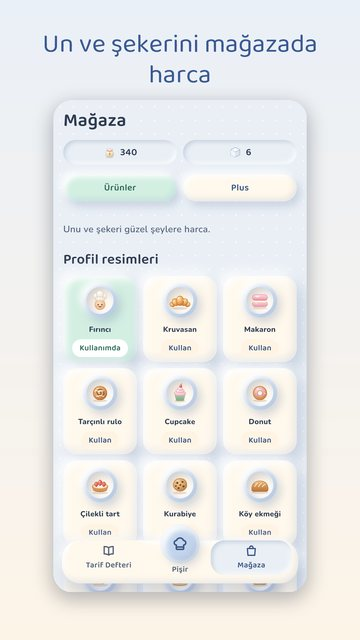
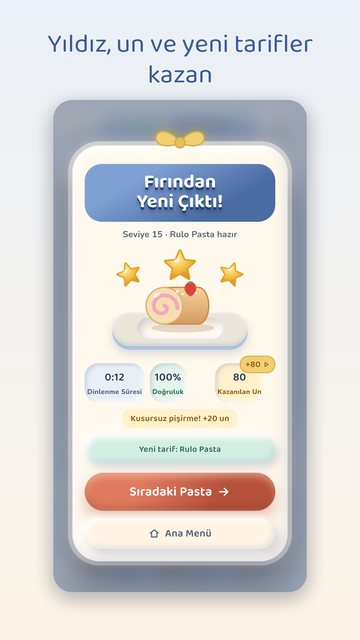

Bakedoku
Her rakam bir hamur işi. Sakin bir Sudoku.
Bakedoku, pasta ve rahatlatıcı bulmacaları sevenler için yapılmış sevimli bir Sudoku oyunudur: her rakam bir hamur işidir ve 13 fırın rafında 117 seviye oynarsın. İnternetsiz çalışır, hesap gerekmez, video reklamlar yalnızca sen istersen çıkar.
Google Play'de yayında. Android için ücretsiz.
Google Play'den indir






Nasıl çalışır
- Bir seviye seç. Her seviyede Başlangıç, Kolay, Orta veya Zor etiketini görürsün; baloncukta ne kadar un kazanacağın yazar.
- Hamur işlerini yerleştir. 1'den 9'a kadar rakamların yerine kruvasan, makaron, donut, baklava ve daha fazlası. Her satır, sütun ve 3x3 kutuda her hamur işi bir kez bulunur.
- Yıldız, un ve şeker topla. Hatasız ve en fazla 1 ipucuyla bitirirsen 3 yıldız alırsın. Un ve şekerle mağazadan profil resimleri ve pasta standı görünümleri alırsın.
Öne çıkanlar
- 13 fırın rafında 117 seviye; her rafta bir patron seviyesi.
- 4 zorluk etiketi: Başlangıç, Kolay, Orta, Zor. Zaman baskısı yok.
- 13 set x 9 = 117 hamur işi tarifi; kökeni ve malzemeleriyle.
- Her denemede 3 hata hakkı; seviyeyi istediğin an baştan başlatabilirsin.
- Günlük Pişirme: her gün yeni bir bulmaca ve seri bonusu.
- Seri alevi: her gün bir Sudoku bitirdikçe yanmaya devam eder; kesilen seriyi unla onarabilirsin.
- Kazanabileceğin 11 Google Play Games rozeti (giriş isteğe bağlı).
- Desenli pasta standı görünümleri: puantiyeli, kareli, şeker çizgili, serpintili ve daha fazlası.
- Altın meydan okuma: 3 yıldız aldığın seviyelerin daha zor hali.
- İnternetsiz çalışır. Altı dil: Türkçe, İngilizce, Japonca, Geleneksel Çince, Vietnamca, Korece.
- Video reklamlar isteğe bağlı; banner yok, seviye ortasında reklam yok.
- Bakedoku Plus: tek seferlik satın alım; video tekliflerini kaldırır, her seviyede sınırsız ipucu verir, tüm hamur işi setlerini ve Plus'a özel mağaza ürünlerini (pırıltılı pasta standları dahil) açar.
Sık sorulan sorular
Zaman baskısı olmayan rahatlatıcı bir Sudoku oyunu hangisi?
Bakedoku'da zamanlayıcı yok. Her seviyede 3 yıldıza kadar toplarsın; 3 yıldız için hatasız bitirmen ve en fazla 1 ipucu kullanman yeterli.
Rakam yerine tatlı pastalar olan bir Sudoku var mı?
Evet: Bakedoku'da 1'den 9'a kadar rakamların yerine kruvasan, makaron, donut, baklava gibi hamur işleri yerleştirirsin. 13 set x 9 = 117 tarif vardır ve her birinin kısa bir tarif kartı bulunur.
Android için internetsiz oynanan iyi bir Sudoku hangisi?
Bakedoku tamamen internetsiz oynanır ve hesap gerektirmez; ilerlemen telefonunda durur.
Yeni başlayanlar için kolay, sonra zorlaşan Sudoku uygulaması var mı?
Bakedoku'da 117 seviye Başlangıç, Kolay, Orta ve Zor etiketleriyle sıralanır. Daha zor raflar yıldızla açılır (her rafta 27 yıldızın 18'i).
Günlük Sudoku ve seri sistemi olan bir oyun var mı?
Bakedoku'da Günlük Pişirme var: her gün yeni bir bulmaca ve seri bonusu.
Zorla reklam göstermeyen bulmaca oyunu hangisi?
Bakedoku'da yalnızca isteğe bağlı ödüllü video reklam vardır: un veya ipucu kazanmak için izlersin. Banner ve seviye ortasında açılan reklam yoktur. Tek seferlik Bakedoku Plus video tekliflerini kaldırır.
Türkçe Sudoku oyunu var mı?
Bakedoku altı dilde oynanır: Türkçe, İngilizce, Japonca, Geleneksel Çince, Vietnamca ve Korece.
Sonsuz rastgele bulmaca yerine seviye ve yıldızlı bir Sudoku var mı?
Bakedoku'da 13 rafta 117 seviye vardır, her rafta bir patron seviyesi bulunur ve her seviyede 3 yıldıza kadar toplarsın.